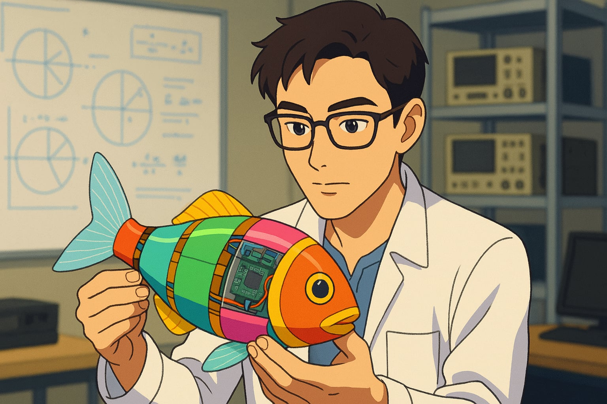

Research in computational fluid dynamics (CFD) simulation, stability analysis, and aerodynamic optimization of insect-like flapping wings, as well as design and fabrication of fast and efficient underwater robotic fish.

I'm Khanh Nguyen, from Vietnam, and currently based in Seoul, Republic of Korea. This is my personal webpage, where I highlight my experiences, projects, and skills. I am open to potential future collaborations in the fields of unmanned vehicle systems and robotics.
Research in computational fluid dynamics (CFD) simulation, stability analysis, and aerodynamic optimization of insect-like flapping wings, as well as design and fabrication of fast and efficient underwater robotic fish.